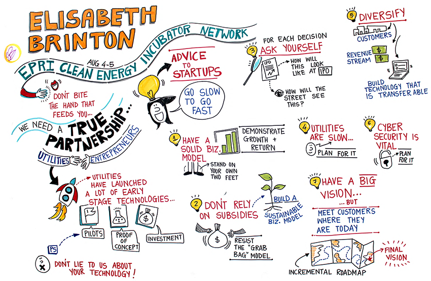
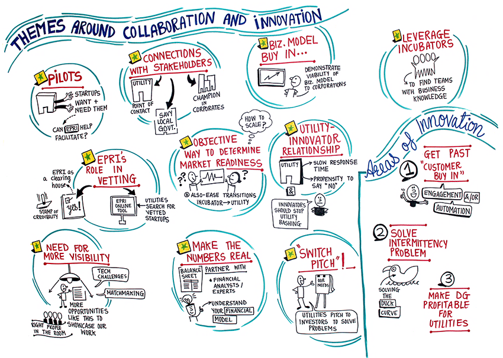

First Annual Clean Energy Incubator Network Summit
Posted by Beth Hartman
The first annual Clean Energy Incubator Network Summit brought together over 100 industry stakeholders last week at the Ritz Carlton in San Francisco, including incubator leaders, entrepreneurs, utility executives, investors, and government representatives. Supported by the Electric Power Research Institute (EPRI), the National Renewable Energy Lab (NREL), and the Department of Energy (DOE), the event was timed with EPRI's Summer Seminar to create opportunities for networking across the incubator and utility attendees.
Along with a pitch panel showcasing top technologies in energy storage, efficiency, solar, wind, electric vehicles, building controls and more, the event featured keynotes from PG&E Corporate Strategy Officer Elisabeth Brinton and DOE Technology to Market Director Jennifer DeCesaro. Ms. DeCesaro focused on programs that the DOE is helping to run for clean energy innovators including the incubator network, the Cleantech University Prize (UP) program, and increased funding opportunities for clean energy entrepreneurship.
Ms. Brinton's remarks focused on advice for start-ups and emerging companies for working with utilities. Ali Adler from New England Clean Energy Council (NECEC) summarized the major themes of Ms. Brinton's talk, which included: (1) build a foundational relationship over time built on trust and transparency - have a big vision but meet customers where they are today, (2) accept and plan for utilities' slow pace relative to startup agility, ideally by building diverse revenue streams, (3) build and demonstrate a reliably growing business model that does not depend on subsidies, and (4) cyber-security is vital.
Brinton's talk was followed by pitches from 17 emerging companies with relevance to EPRI's utility members' interests. Here is a quick overview of companies presenting in the first half of the panel:
- FreeWire makes mobile energy storage solutions for electric vehicle charging and diesel generator replacements. Supported by the LA Cleantech Incubator (LACI), the company already has pilot programs in place with corporate campuses in the Bay Area like LinkedIn. Other LACI companies at the event were Chai Energy and PickMySolar.
- Clean Energy Trust (CET) companies included AllCellTechnologies, GoElectric, and MeterGenius.
- Several companies supported by NextEnergy in Detroit offered compelling solutions in wind, sensors (AMF Nano), and drone technology. For example, Accio Energy generates electricity using wind and charged water mist. The Guardian drone from SkySpecs features a seamless co-pilot that takes over flight control when an obstacle is nearby or a collision is imminent.
During the second half of the pitch panel, we heard from companies supported by the Energy Excelerator in Hawaii, the Austin Technology Incubator (ATI), the New England Clean Energy Council (NECEC), and OregonBEST in the northwest. Here is an overview of those technologies:
- From the Energy Excelerator, we heard from Bidgely, Edisun Heliostats, and Ibis Networks.
- Enervalis is supported by ATI and came all the way from Belgium to describe a solution focused on sustainable energy solutions for electric vehicles, buildings and micro-grids.
- Energy Storage Systems from OregonBEST makes an all iron flow battery.
- Companies from NECEC included FirstFuel, Pika Energy, and VCharge.
Ali Adler from NECEC also summarized the whole event. "On Day 2 we kicked off with a set of conversation reviewing and building on what had been discussed the previous day, and then broke out into small groups to discuss opportunities for the network to play a role in solving some of the challenges that were raised. We also had the opportunity to hear from the NREL team developing online network tools, and the heads of two of EPRI's technology groups, who shared information about EPRI's priority programs and research efforts in energy efficiency and storage. We closed out the day with networking with the EPRI Summer Seminar attendees." In addition, the event included an optional tour of Prospect Silicon Valley on the morning of August 6th with the opportunity to view a Proterra electric bus and more.

"All in all, attending the workshop was a great opportunity to connect with peers across the country who are working on similar programs to support the growth and vitality of clean energy innovation ecosystems, and to connect with representatives of utilities who are interested in finding existing innovators solving big energy problems."